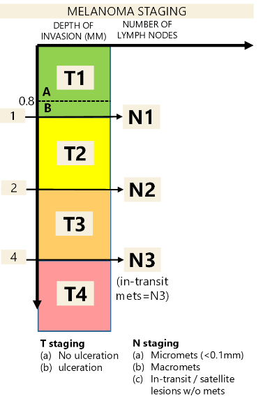
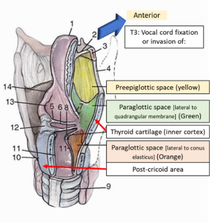

Head & Neck Staging - 8th Edition
AJCC 8th Edition Staging
GENERAL THEMES: For Oral Cavity, Oropharynx, Hypopharynx, Salivary Gland, Thyroid CA (in general)
T1—<2cm
T2— 2-4cm
T3— 4+cm
In general, for Laryngeal Cancer
T1 - same subsite
T2 - extends to nearby subsite
T3 - fixes vocal cords
T4 - extends past borders of larynx
For oral cavity, p16 negative OP, larynx, salivary gland
For Nasopharyngeal and P16 positive
Tumor Staging
Mandible (into cortex)
Larynx
Tongue musculature
Medial pterygoids
Hard palate
Mandible
Lateral nasopharynx
Lateral pterygoids/pterygoid plate
Skull base
Carotid
Suprahyoid epiglottis
Infrahyoid epiglottis
Aryepiglottic folds (laryngeal aspect)
Arytenoids
Ventricular bands (false vocal folds)
Inner cortex of thyroid cartilage
Paraglottic space
Post-cricoid area
Preepiglottic space
Through thyroid cartilage
Neck soft tissue
Esophageus/Trachea
Prevertebral space
Around carotid
Mediastinum
Extension to supraglottis or subglottis
Impaired VF movement
Esophagus/Trachea
Hypopharynx subsites
Pyriform sinuses
Lateral/posterior hypopharyngeal wall
Post-cricoid region
One subsite AND <2cm 2+ subsites OR 2-4cm
Cannot extend to esophageus or cause VF fixation
>4cm OR invades esophageus OR causes VF fixation Trachea
MAXILLARY SINUS
Limited to maxillary sinus mucosa Erosion into bone EXCEPT orbital floor or posterior wall
Invasion into:
Orbital floor/ethmoid sinus (think V2 numbness)
Posterior wall/pterygoid fossa
Orbital contents
Skin
Pterygoid plates/infratemporal fossa
Sphenoid/frontal sinus/cribriform plate
Orbital apex
Dura/brain/skull base
Cranial Nerves (except V2)
nasopharynx
NASAL CAVITY/ETHMOID SINUS
Limited to one subsite in nasoethmoid complex More than 1 subsite in nasoethmoid complex (aka both nose and ethmoid)
Orbital floor
Maxillary sinus
Cribriform plate
*Note similarity to Maxillary sinus CA
Nasopharynx
NASOPHARYNGEAL CA
WHO Type I - Keratinizing SCCA
WHO Type II - Nonkerating SCCA (associated with EBV, better prognosis)
WHO Type III - Undifferentiated CA
Nasopharynx/nasal cavity Invaded parapharyngeal space or pterygoids musces
(If they have trismus)
Invasion into bones and/or sinuses hypopharynx
Cranial nerves
Orbit
N stage N1 Unilateral Bilateral SALIVARY GLAND
<2cm, no extraparenchymal extension 2-4cm, no extraparenchymal extension >4cm OR extraparenchymal extension Facial nerve
mandible
pterygoids
Wraps around carotid
WELL DIFFERENTIATED THYROID CA
Tumor Lymph T1: <2cm
T1a: <1cm
T1b: 1-2cm
N1a: Level VI/VII nodes
T2: 2-4cm N1b: mets to cervical nodes T3a: >4cm limited to thyroid
T3b: ETE invading strap muscles
T4a: invasion beyond capsule&straps
T4b: invading into carotid/mediastinum/RLN
Thyroid cancer staging
Only >55 years old: those <55yo are Stage I unless they have mets, then they are stage II
Anaplastic CA is automatically stage IV (IVA if N0 & T1-3a; IVB if >T3a or N1+)
Metastatic disease = Stage IVB
id="non-melanoma-skin-cancer-scc-etc">NON-MELANOMA SKIN CANCER (SCC etc)T category T1 <2cm T2 2-4cm
T3 >4cm or DOI >6mm or Perineural/minor bone invasion T4a
T4b
Gross cortical bone/bone marrow invasion
Tumor with skull base/foramina invasion
MELANOMA (SKIN)
a/b/c classification
T stage: IF ulceration stage is B (as in T2->T2b)
N stage
(a) if micrometastasis
(b) if macrometasis
(c) given if in transit/satellite lesions
w/o metastatic nodes
T N T1
T1a
<1mm thick
<0.8mm + no ulceration
if 0.8-1mm thick (or if ulceration)
N1 1 node 1-2mm thick
N2 2-3 nodes 2-4mm thick N3 4+ nodes, matted nodes, or in transit mets >4mm thick MUCOSAL MELANOMA
N/M stage Mucosal melanoma Any lymph node mets T4a
Involves soft tissue, cartilage, bone,
Overlying skin
M1 Any mets Involves skull base, cranial nerve, carotid, masticator, prevertebral space 
N1
N2ALL: <6cm, ENEnegative
N2a: single, ipsilateral
N2b: multiple, ipsilateral
N2c: bilateral/contralateral
N3a: >6cm
N3b: ENEpositive
Head & Neck Cancer Staging (for most cancers)
| N2 | N3 | T1 | I | IVA | IVB | T2 | II | T3 | T category | T0 Tis |
No primary identified Carcinoma in situ |
T1 | <2 cm & DOI <5mm | 2-4cm or DOI 5-10mm | >4cm or DOI >10mm | T4a | Invades Inf. alveolar nerve FOM Skin Tongue musculature |
|---|
Invades
Masticator space
Pterygoid plates
Skull base
Carotid
*note similarities to T4b of p16neg OPC

OROPHARYNGEAL
HPV Neg (p16-) and HPV Pos
Tx
T4
T4a - Same
T4b - Invades
Red = only for p16 negative OP cancers
Clinical N staging
Note: ECE automatically bumps you up a N stage in the pathological N grading system (not shown).
Basically, if you have a N1 node and path shows ECE then its becomes a N2a node.
With Pathological N Staging
Staging - Oropharyngeal
HPV Positive
HPV Positive Staging
(based on pathological N stage)
HPV Negative
LARYNX
Supraglottic subsites:
SUPRAGLOTTIS
Tumor in 2+ subsites (can be glottis, vallecula).
Normal TVF movement
Vocal cord fixation and/OR
Invasion of

In general, for Laryngeal Cancer
Glottis
T1a
T1b
1 vocal cord. Normal movement
Both vocal cords. Normal movement
Either:
*not similarity to supraglottic T3
*note similarity to Supraglottic T4a
*note similarity to Supraglottic T4b
Glottic Stage and VF movement
SUBGLOTTIS
Limited to subglottis